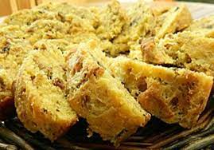

Pompe aux graton

Ingrédients
- 500g de farine
- 1 sachet de levure de boulanger
- 1 cuillère à café de sel
- 1 cuillère à soupe de sucre
- 1 cuillère à soupe d'huile d'olive
- 1 oignon
- 100g de lardons
- 100g de gruyère râpé
- 1 oeuf
- 10cl de lait
Préparation
- Dans un saladier, mélanger la farine, la levure, le sel et le sucre.
- Ajouter l'huile d'olive et 20cl d'eau tiède. Pétrir la pâte jusqu'à ce qu'elle soit lisse et élastique.
- Couvrir le saladier d'un torchon et laisser reposer 1h30 à température ambiante.
- Préchauffer le four à 180°C.
- Émincer l'oignon et le faire revenir dans une poêle avec les lardons.
- Étaler la pâte sur une plaque de cuisson recouverte de papier sulfurisé.
- Mélanger l'oeuf et le lait, puis badigeonner la pâte avec ce mélange.
- Répartir les lardons et l'oignon sur la pâte, puis saupoudrer de gruyère râpé.
- Enfourner 20 minutes.